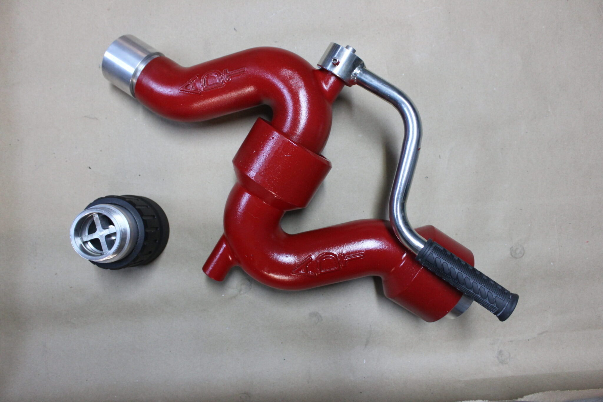
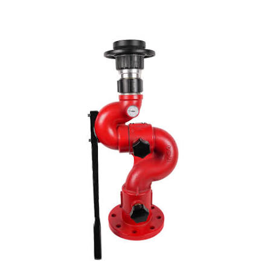
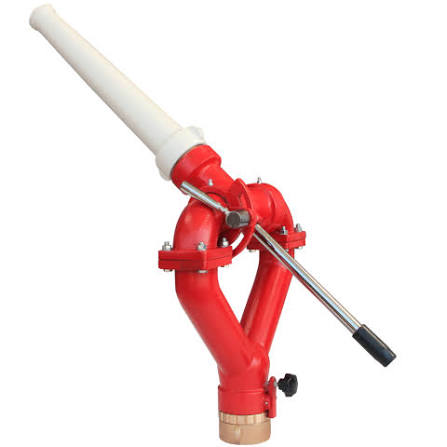
POMPA VE TESİSAT ELEMANLARI
2 ve 2,5 İnç Su Monitörleri
Ürün özellikleri ve fiyat için bizimle iletişime geçin.
Bilgi al ↗OSMANLI TANKER
Su tankeri, arazöz, araç üstü ekipman imalatı ve tanker bakım-onarımında güvenilir çözümler. Ankara Ostim’de hizmetinizdeyiz.
ARAZÖZ TESTLERİMİZ • Sesi açarak izleyebilirsiniz
2011'DEN BERİ ANKARA OSTİM'DE
Osmanlı Tanker Araç Üstü Ekipman, 2011 yılından bu yana Ankara Ostim'de tanker, depolama tankı ve araç üstü ekipman imalatı ile tamir ve bakım alanlarında faaliyet göstermektedir. Su tankerleri, arazözler, pompa ve tesisat sistemlerinde ihtiyaçlara yönelik çözümler sunuyoruz.
İşlevsel, dayanıklı ve ihtiyaca uygun imalat ve onarım hizmeti sunmak.
Üretim tecrübemiz ve işçilik anlayışımızla sektörde güven duyulan bir çözüm ortağı olmak.
ÜRÜN KATALOĞU
Ürün hakkında detay ve fiyat bilgisi almak için WhatsApp üzerinden bize ulaşabilirsiniz.



POMPA VE TESİSAT ELEMANLARI
Ürün özellikleri ve fiyat için bizimle iletişime geçin.
Bilgi al ↗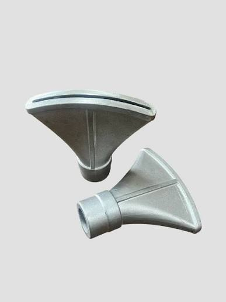
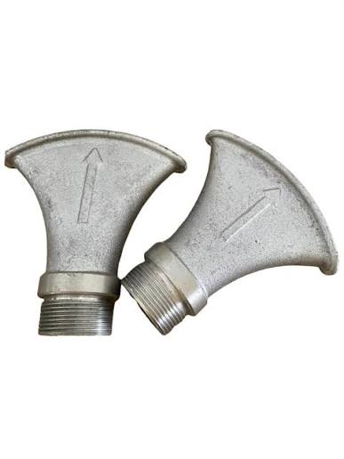
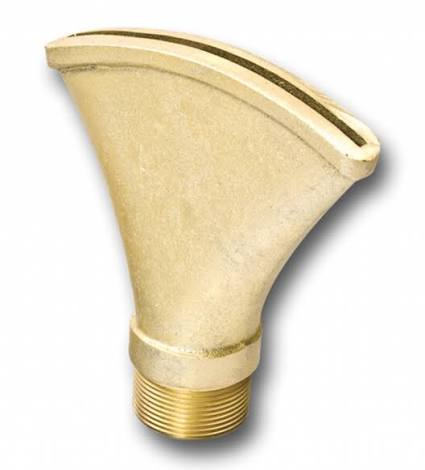
POMPA VE TESİSAT ELEMANLARI
Ürün özellikleri ve fiyat için bizimle iletişime geçin.
Bilgi al ↗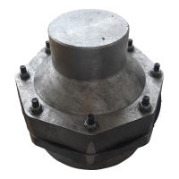
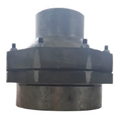
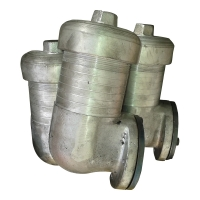
POMPA VE TESİSAT ELEMANLARI
Ürün özellikleri ve fiyat için bizimle iletişime geçin.
Bilgi al ↗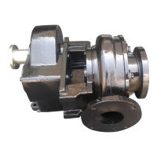
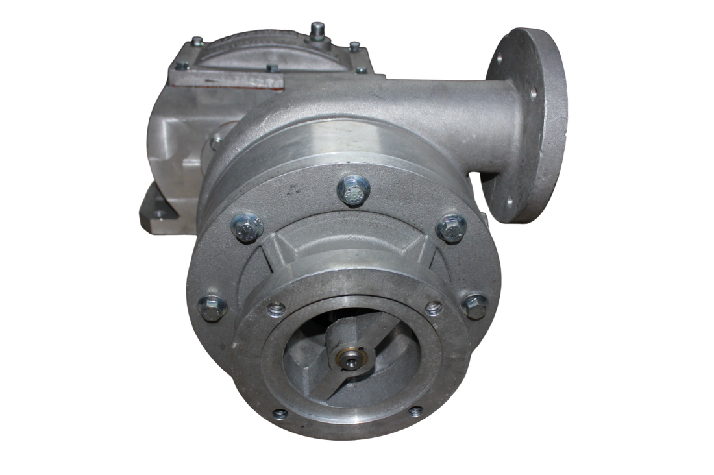
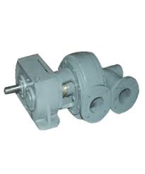
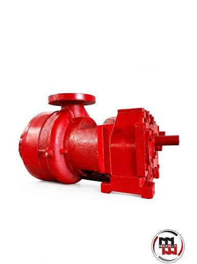
POMPA VE TESİSAT ELEMANLARI
Ürün özellikleri ve fiyat için bizimle iletişime geçin.
Bilgi al ↗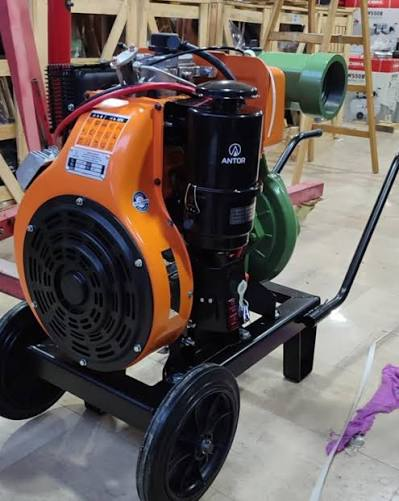
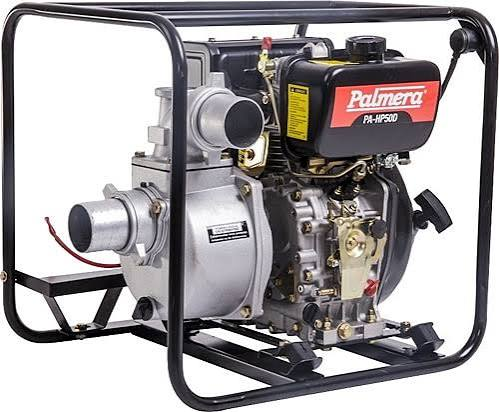
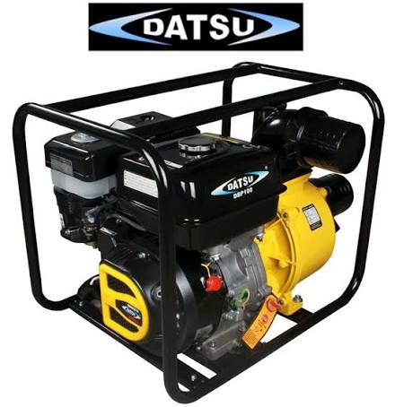
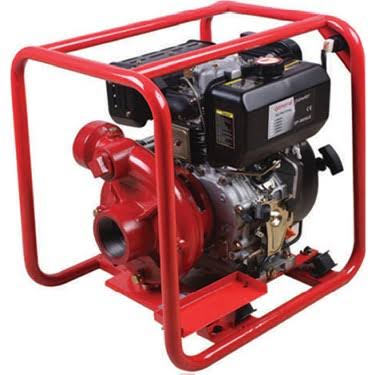
POMPA VE TESİSAT ELEMANLARI
Motorlu su pompaları hakkında bilgi ve fiyat almak için iletişime geçin.
Bilgi al ↗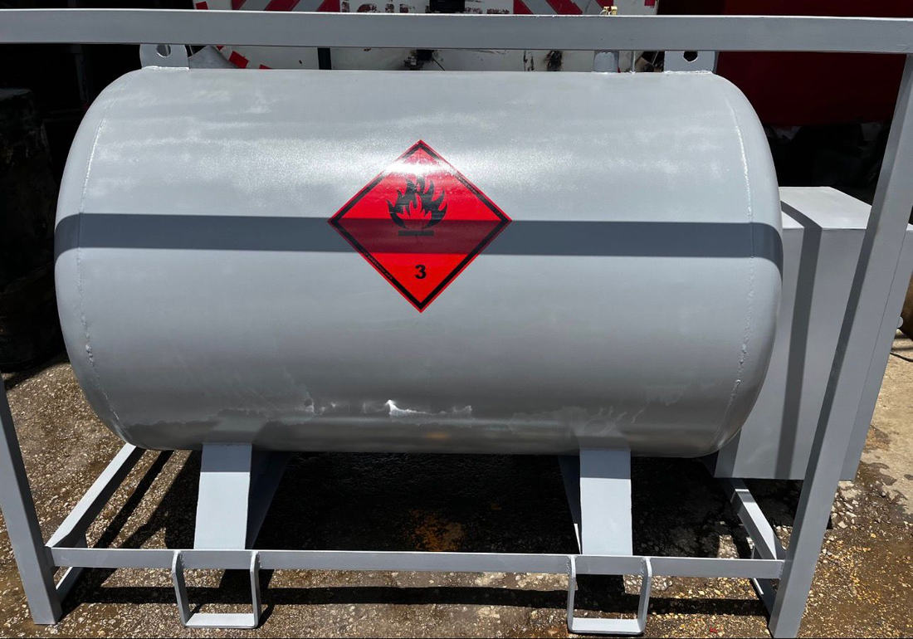
TANKERLER
Taşınabilir akaryakıt depolama tankları ve ihtiyaca uygun imalat çözümleri.
Bilgi al ↗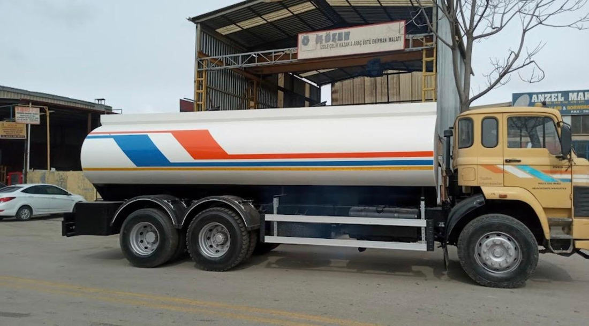

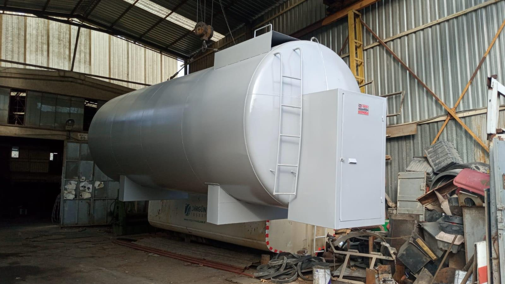

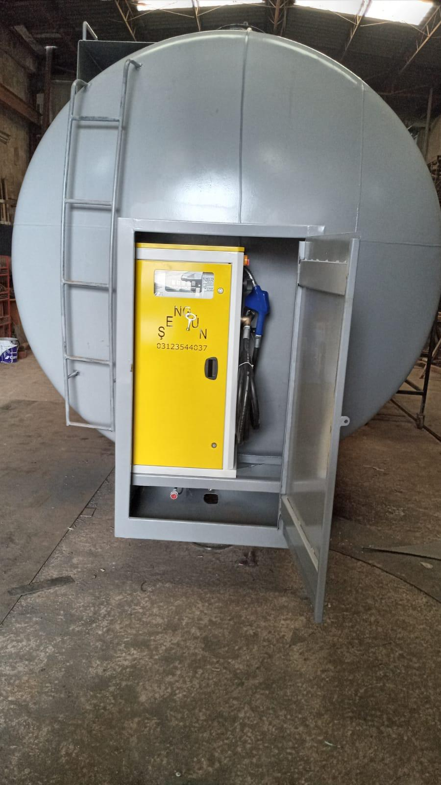
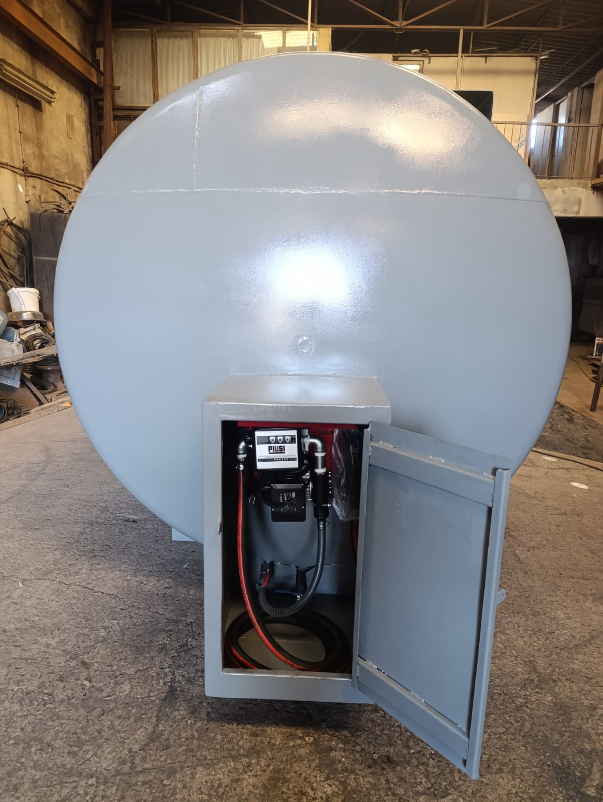
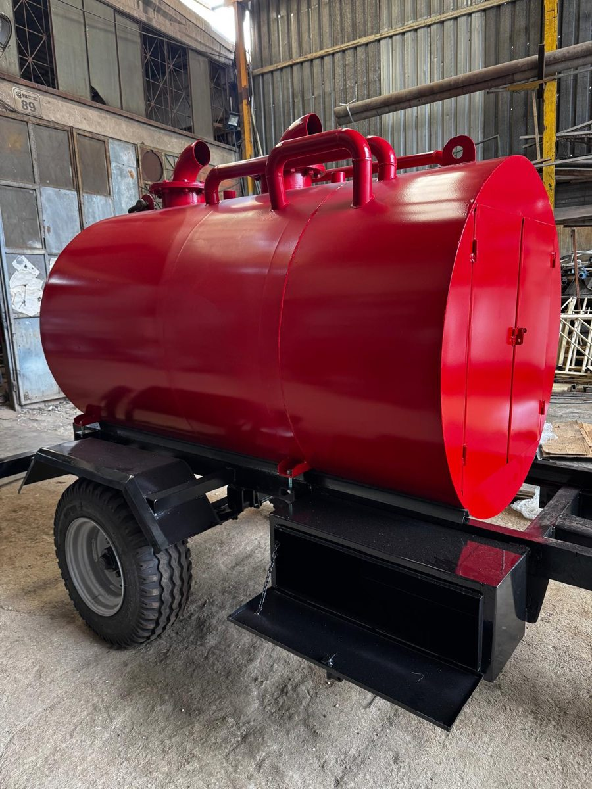
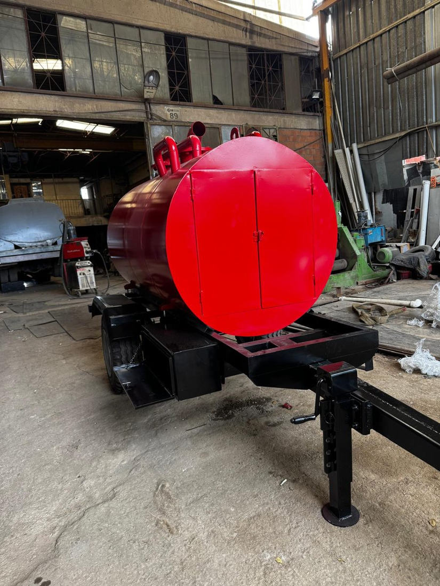
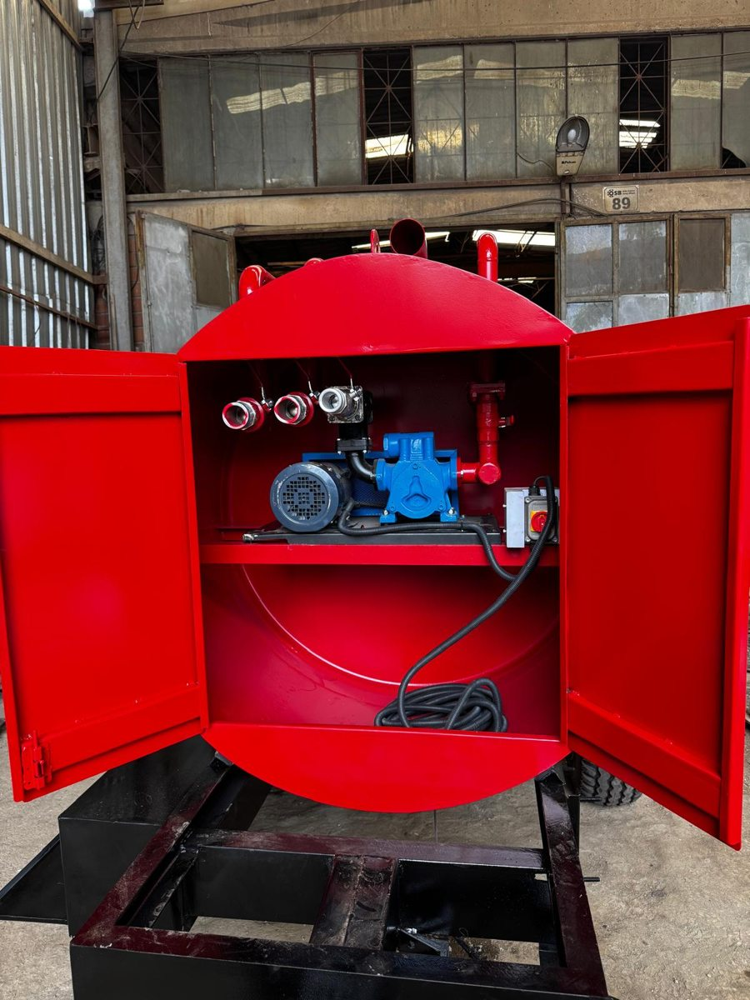
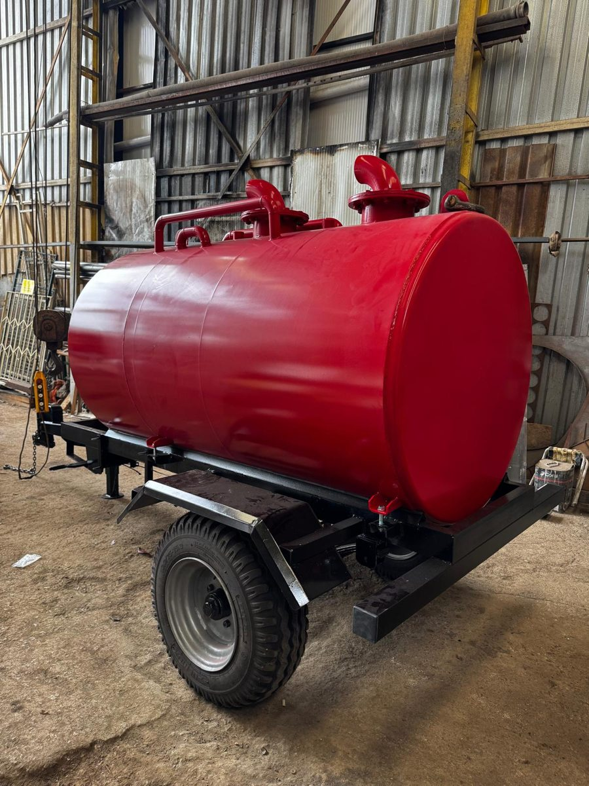
RÖMORKLU TANKERLER
Atık yağların toplanması ve taşınmasına yönelik römorklu tanker. Çelik tank, römork şasisi, pompa sistemi ve ekipman bölmesiyle imalat çözümleri.
Bilgi al ↗Fotoğraflar Osmanlı Tanker çalışma ve imalat görsellerinden derlenmiştir. Projeye göre ürün özellikleri değişebilir.
HİZMETLERİMİZ
Ürün, imalat veya tamir ihtiyacınızı paylaşın; detayları birlikte değerlendirelim.
WHATSAPP ÜZERİNDEN BAŞVURU
Tanker satmak veya satın almak için bilgileri doldurun; mesajınızı WhatsApp üzerinden doğrudan bize iletin. Fotoğrafları WhatsApp'tan ayrıca paylaşabilirsiniz.
İLETİŞİM
Ürün bilgisi, teklif veya servis talepleriniz için bize ulaşın.